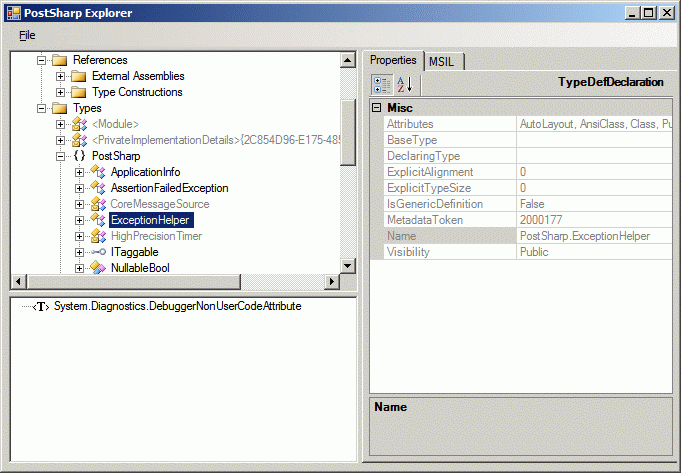

Open this sample in Visual Studio Open this sample in Visual Studio
Open this sample in Visual Studio Open this sample in Visual Studio
The PostSharp.Samples.Explorer
project is a WinForms application that allows
to browse a .NET assembly. The concept is very similar to ildasm, Lutz
Roeder's
Reflector or Visual Studio Object Browser, but it is based on the
PostSharp
Class Library and does not have the ambition to compete with the
mentioned
tools.
This project demonstrates the techniques of opening an assembly and browsing its content. When an element is selected, its properties are displayed in a Property Grid. Alternatively, the MSIL code can be visualized.

The design of this application is very simple. The module is very
classically represented as a tree. The tree uses a distributed design,
i.e. the behaviors (like select, expand, click, double click, ...) are
delegated to the nodes. Nodes should derive from the AutonomousTreeNode
class (automous because they should implement their own behavior).
Every declaration in the module is associated to a tree node.
The AssemblyResolver class handles the AppDomain.CurrentDomain.AssemblyResolve
event and allows to look in the directory containing already loaded
assemblies when looking for a new assembly. It enables also
version-tolerant links, which is useful when a precise version of
assembly an assembly is required, but has been lost.
All assemblies are loaded in a single Domain stored as a field instance in MainForm.
Assembly assembly = Assembly.LoadFrom(path);
ModuleDeclaration module = domain.LoadAssembly(assembly, true).ManifestModule;
this.treeView.Nodes.Add(new ModuleTreeNode(module, path));